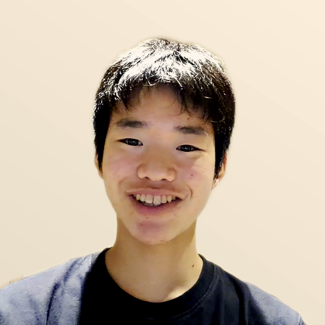

継続保守・改善
納品後の改善やバグ修正を継続的に行います。
FOR BUSINESS
高専生チームと株式会社Ｙｕｕｔｈの開発支援で、必要な機能の整理から開発まで進めます。MVP、社内ツール、業務改善など、まずは課題の大きさを一緒に整理します。
料金は税別の目安です
ACCELERATORS / INTERVIEW / CONTEST
 採択・プログラム
採択・プログラム 報道掲載
報道掲載 報道掲載
報道掲載 報道掲載
報道掲載ご依頼の前に、知っておきたいこと
業務ツールが「使える形」になるまでの4ステップ
案件の規模や体制に合わせて、必要な工程だけを組み合わせてお任せいただけます。
目的・利用者・必要な機能を整理し、優先順位と確認事項を言語化します。
画面やデータの設計から、MVP・業務ツールの実装まで進めます。
動作確認やフィードバックをもとに、使い方と修正内容を整理します。
導入時の確認と、運用開始後の改善・保守について相談できます。
最初から完璧な仕様は必要ありません。高専生チームが短いサイクルで形にし、実際に使いながら改善することで、現場に定着するツールに仕上げます。
Process & Team
法人窓口を株式会社Ｙｕｕｔｈが担当し、案件に合う高専生メンバーを編成します。
窓口
相談内容、契約、連絡事項をまとめる法人窓口です。
PM・進行
決めること、担当、次回確認日を共有しながら進行します。
技術レビュー
必要なスキルに合わせてメンバーを編成し、実装内容を確認します。
報告・引き継ぎ
報告頻度は案件ごとに合意し、引き継ぎ可能な状態で記録を残します。
まずは案件と継続接点をつくり、実績と体制に合わせて支援領域を広げます。
納品後の改善やバグ修正を継続的に行います。
担当者の報告・整理・引き継ぎの時間を減らします。
企業が出した課題に、高専生が有償で提案・試作します。
協賛を通じて、高専生との仕事を起点にした相互理解の機会をつくります。
卒業した高専生や経験者を、品質レビュー・PM・技術メンターとして活用します。
PARTICIPATING MEMBERS
そのうち一部のメンバーを紹介しています
MEMBERS

株式会社Yuuth 代表取締役
神山まるごと高専 デザインエンジニアリング学科1年
岡山県出身の16歳。ミライノピッチ3部門受賞、なんチャレ2025最優秀賞、Akatsukiプロジェクト採択など、高専生として積極的に事業開発・技術開発に取り組む。
ポートフォリオを見る ↗
株式会社Yuuth CTO
神山まるごと高専 デザインエンジニアリング学科1年
山梨県出身。サイエンスキャッスル研究費2026 ものづくり0.THK賞 採択チーム、第37回全国高等専門学校プログラミングコンテスト 自由部門出場、IchigoJam for MCX 開発メンバー。
Pitch Deck
隣の高専生の最新の事業紹介資料をご覧いただけます。
PDFが表示されない場合はこちらからダウンロードしてください。
CONTACT
要件が固まっていなくても大丈夫です。フォームから相談内容をお送りください。
Contact